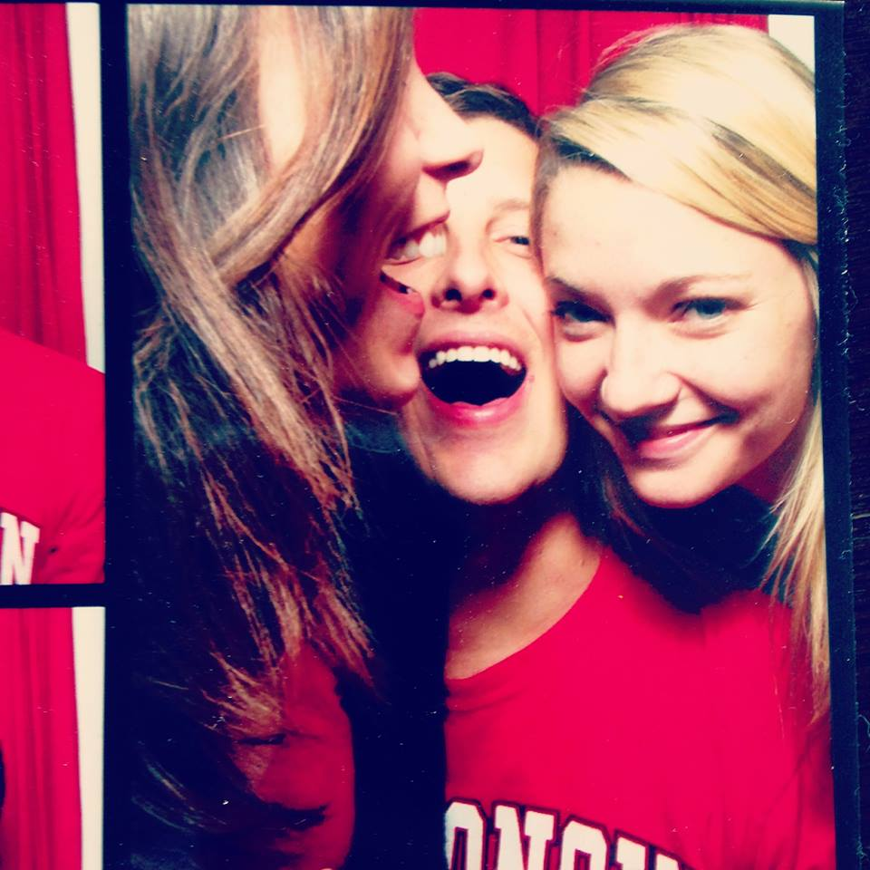

Winnie was born just outside of Washington DC in Virginia. She attendend the University of Wisconsin-Madison and graduated from the Wisconsin School of Business. After graduation, Winnie launched her career at Target Corporation in Minneapolis, MN. Winnie is currently finishing her final year at the Kellogg School of Management and will graduate in June 2016 with a Masters in Business Administration. Winnie plans to move to San Francisco post Kellogg and is excited to begin a career with Apple.